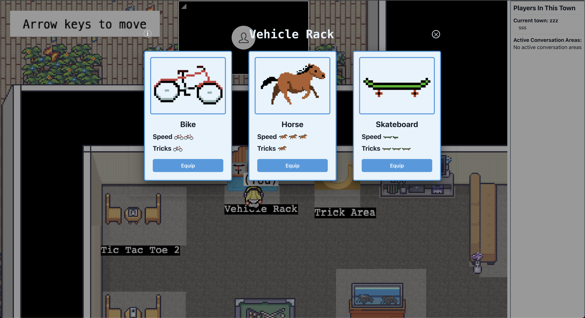
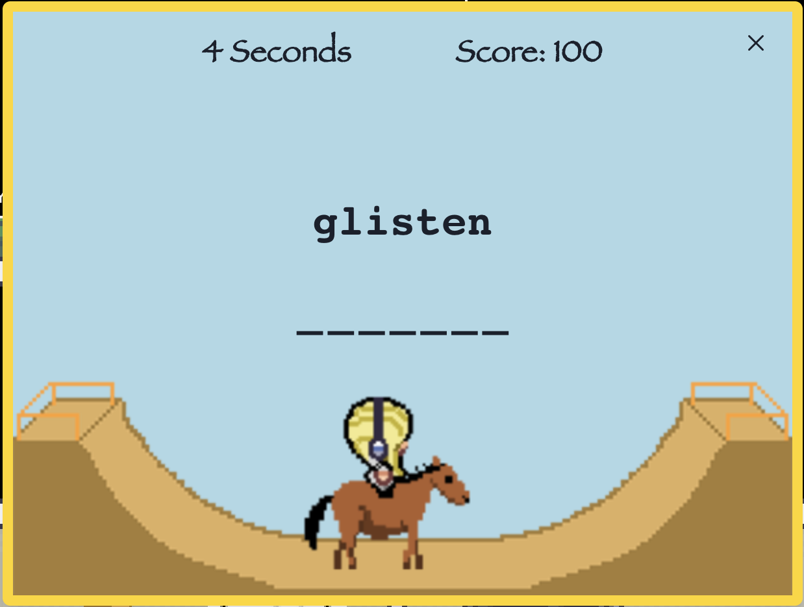

The idea
Covey.town is a retro Pokémon-style game, and the character walks around the map pretty slowly — so as a team of four, we decided to add vehicles that let players move faster. We also wanted to give people something to do while riding, so we tacked on a small arcade-style typing minigame that only unlocks with a vehicle equipped.
What we shipped
The final implementation includes three vehicles — bicycle, skateboard, and horse — each with its own movement speed and animations. The minigame gives players 15 seconds to type as many words correctly as possible. Final scores are tied to a three-letter username and are written to both a per-session leaderboard and a persistent one.
Tech stack
- React + Next.js with ChakraUI
- TypeScript across the frontend and backend
- Firebase for the persistent leaderboard
- Render for deployment
- Jest for frontend and backend testing, including mocks, spies, and fake timers
My contributions
I designed the backend data structures for vehicles, implemented the logic for equipping one, designed both the frontend and backend for the minigame, and built the UI for the leaderboard. Along the way I got to work with:
- TypeScript, including asynchronous patterns for the backend minigame timer
- Emitters for backend ↔ frontend communication
- React hooks (
useState,useEffect, and friends) - Jest-based test design using mocks, spies, and fake timers